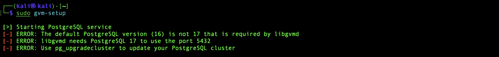
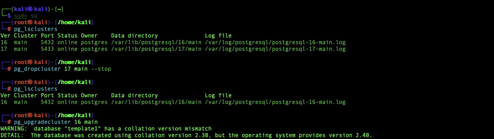
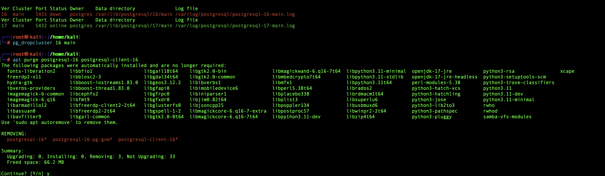
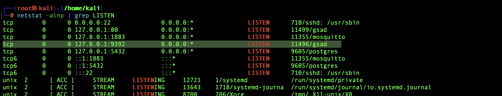
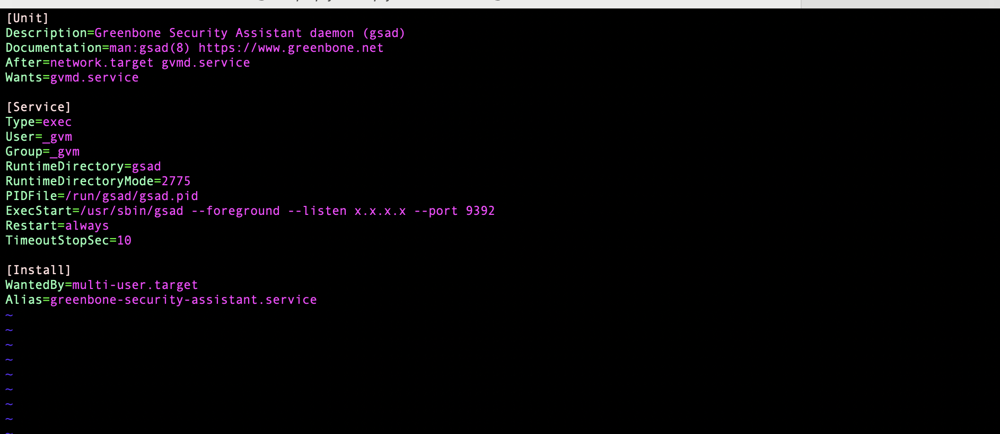

OpenVAS installation && troubleshooting
Installing OpenVAS on Kali for free vulnerability scanner
Follow the instructions in this link:
https://greenbone.github.io/docs/latest/22.4/kali/index.html
Troubleshooting:

Before running the gvm-setup command from the tutorial above you need to upgrade PostgreSQL to version 17
https://secburg.com/posts/howto-upgrade-postgresql-16-to-17/



Add:ExecStart=/usr/sbin/gsad --listen=x.x.x.x --port 9392
To: /usr/lib/systemd/system/gsad.service

sudo systemctl daemon-reload && sudo gvm-start